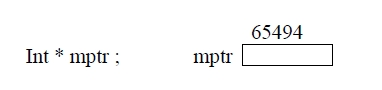

Pointer Arithmetic: An integer operand can be used with a pointer to move it to a point / refer to some other address in the memory. consider an int type ptr as follows

Assume that it is allotted the memory address 65494 increment value by 1 as follows .
mptr ++; or ++ mptr;
mptr = mptr +1; or mptr + =1 ;
++ and - - operators are used to increment, decrement a ptr and commonly used to move the ptr to next location. Now the pointer will refer to the next location in the memory with address 64596. C language automatically adds the size of int type (2 bytes) to move the ptr to next memory location.
mptr = mtpr + 1
= 64594 + 1 * sizeof (int)
= 65494 + 1 * 2
Similarly an integer can be added or subtract to move the pointer to any location in RAM. But the resultant address is dependent on the size of data type of ptr.
The step in which the ptr is increased or reduced is called scale factor.Scale factor is nothing but the size of data type used in a computer.
The size of float = 4
char = 1
double = 8 and so on
Ex: float *xp; (assume its address = 63498)
xp = xp + 5;
Will more the ptr to the address 63518
63498 + 5 * size of (float)
63498 + 5*4
63498+20
63518